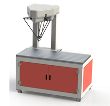
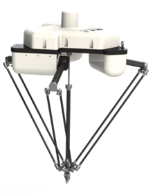

泉州华中科技大学智能制造研究院
亮相海峡618成果展
2018年6月18日-21日，第十六届中国-海峡项目成果交易会在福州海峡国际会展中心隆重举行。
此次展会，泉州华中科技大学智能制造研究院由机器人事业部部长元波带领机器人团队及视觉团队，展示了机器人视觉补料系统和机器人视觉分拣系统，迎来众多领导、专家、嘉宾前来参观，受到政府领导、业内专家、参展观众的好评。
参展项目介绍
机器人视觉分拣系统

该设备由DT401B型号机器人、视觉系统、传送带系统以及支架组成。整个设备为大家演示的是工业产线上基于视觉检测的物品拾取并分类摆放的过程。
案例中共有三种类型的物品：白色圆形片，白色方形片，带有logo的方形片。
视觉系统能够通过颜色、形状、花纹的不同识别和区分不同的物品。视觉系统能够快速学习和识别新加的物品（方便随时更换要分拣的物品）
机器人抓取速度：180次/分钟。
此套系统常用在以下场合：
1.不同种类物品分类分拣、装盒。
2.产品中残次品剔除。
3.食品，药品行业拾取装箱。
机器人视觉补料系统
该设备由DT801B型号机器人、视觉系统、传送带系统以及支架组成。整个设备为大家演示的是工业产线上基于视觉检测的物品放置案例。
设备运行时，视觉系统持续检测视野范围内宽传送带上的目标位置（案例中为白色方形的位置），机器人在获取位置后将工件放置到目标位置。
此套系统常用在以下场合：
1.产品贴标。（产品乱序摆放在传送带上，机器人自动贴标。）
2.产品装盒。（如食品，药品，纽扣电池等拾取装盒。包装盒乱序摆放在传送带上，机器人自动拾取产品装入盒中。）
 此次展会，机器人视觉补料系统和机器人视觉分拣系统深受好评，肯定了一直以来依托先进理念和强大技术积累所获得的业界成果。历经3多年的发展，泉州华中科技大学智能制造研究院以多层次的技术服务应用已覆盖机械制造、石材 陶瓷、食品饮料、纺织鞋服、水暖卫浴、工艺美术、大中专院校等领域，已成为“泉州制造2025”的主力军。展会之后，泉州华中科技大学智能制造研究院将肩负更高使命和责任，阔步迈进海洋垂直领域的战略新征程！
此次展会，机器人视觉补料系统和机器人视觉分拣系统深受好评，肯定了一直以来依托先进理念和强大技术积累所获得的业界成果。历经3多年的发展，泉州华中科技大学智能制造研究院以多层次的技术服务应用已覆盖机械制造、石材 陶瓷、食品饮料、纺织鞋服、水暖卫浴、工艺美术、大中专院校等领域，已成为“泉州制造2025”的主力军。展会之后，泉州华中科技大学智能制造研究院将肩负更高使命和责任，阔步迈进海洋垂直领域的战略新征程！

泉州华中科技大学智能制造研究院
2018年6月23日